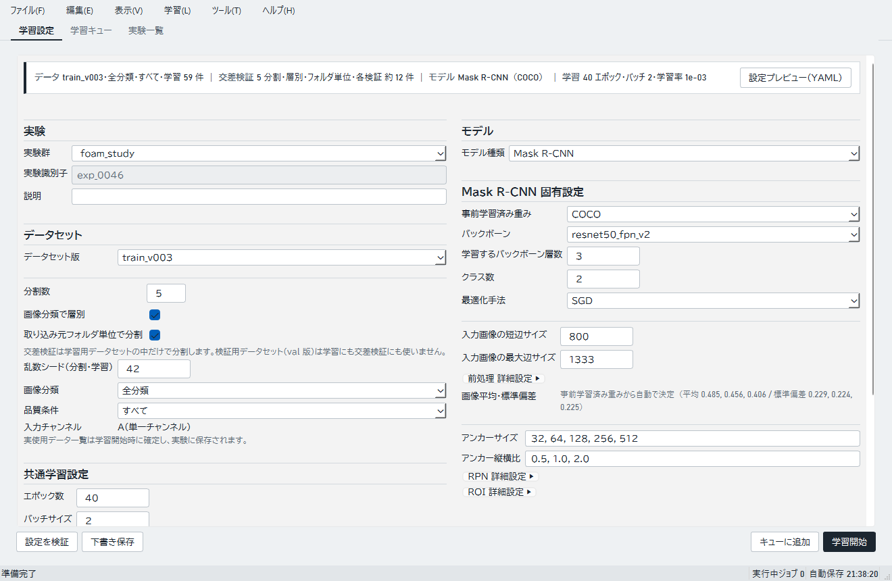
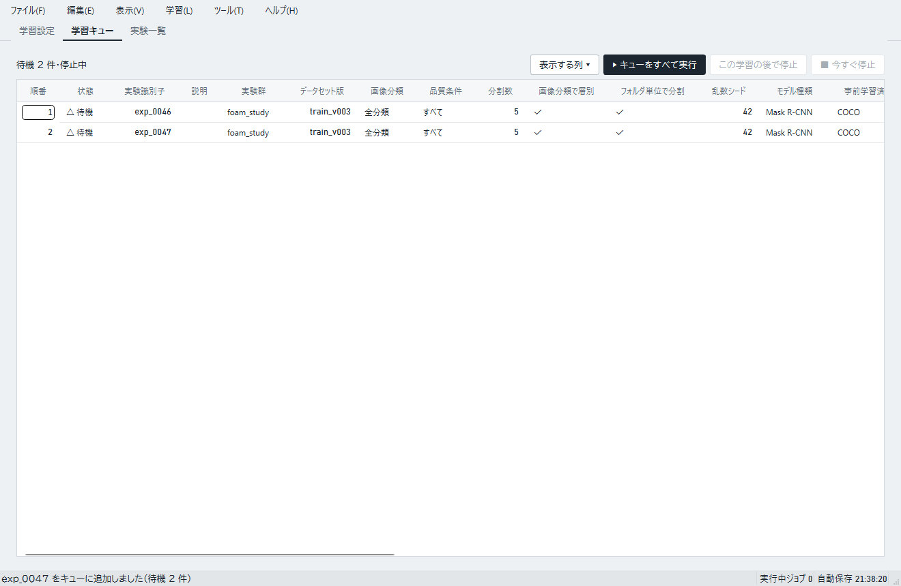
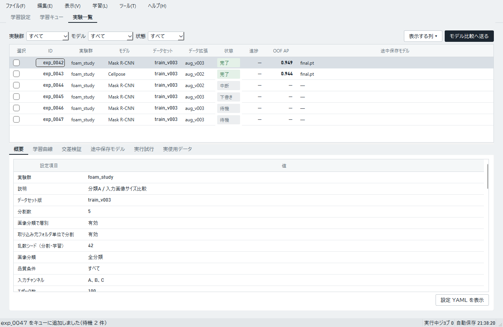

実接続では学習を実データで実行し、設定・状態・結果を保存します。学習時の交差検証では学習用データセット版の中でデータを分けます。組になった検証用データセット版は、学習後に候補を評価するときに使います。データ準備画面で作った版は選べません。
学習設定を作る
- 「学習設定」タブで「実験群」と「説明」を入力します。
- 学習用データセット版とモデルを選び、学習条件を確認します。学習時の交差検証では学習用版の中でデータを分けます。組になった検証用版は、学習後に候補を評価するときに使います。
- 必要に応じて「データ拡張を設定」を開きます。
- 「設定を検証」を押し、表示された確認結果と見込み使用データ数を確認します。
- すぐに実行する場合は「学習開始」、後で順番に実行する場合は「キューに追加」を選びます。設定だけ保存する場合は「下書き保存」を選びます。


キューを使う
「学習キュー」タブには実行待ちの設定が並びます。行を選ぶと複製、削除、上へ、下へ、設定を開いて編集できます。再試行として予約した行は複製できません。
「▶ キューをすべて実行」で先頭から順に開始します。「この学習の後で停止」は実行中の項目が終わってからキューを止めます。「■ 今すぐ停止」は現在の学習を中断し、キューも止めます。中断した学習には途中までの結果が残ります。


実験結果を見る
「実験一覧」タブでは、下書き、待機、実行中、完了、失敗、中断、復旧不可、終了未確認の状態を確認できます。行を選ぶと設定や実行状況が詳細欄に表示されます。「結果を開く」は行の右クリックまたは上部の「学習」メニューにあり、「学習曲線」タブを開きます。
失敗または中断した実験は、行の右クリックまたは「学習」メニューの「同じ設定でやり直す」から再試行します。チェックを付けた実験は「複製してキューに追加」で別の実験として登録できます。画面上部の「モデル比較へ送る」は実験をリリース候補に登録します。「実験を削除」と「成果物を整理」も、行の右クリックまたは「学習」メニューから選びます。


記録や成果物を整理する
「実験を削除」は設定・全試行・途中保存モデル・ログを削除し、取り消せません。キューに残っている同じ実験の行も削除します。候補やリリースで参照されている実験は削除できません。
「成果物を整理」は実験の記録を残したまま、選んだ試行の大きなファイルを削除します。リリースに使われているモデルは削除対象になりません。